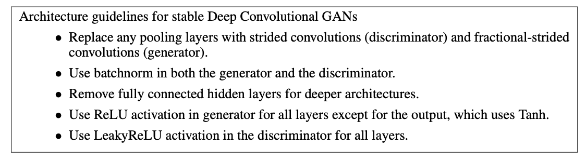
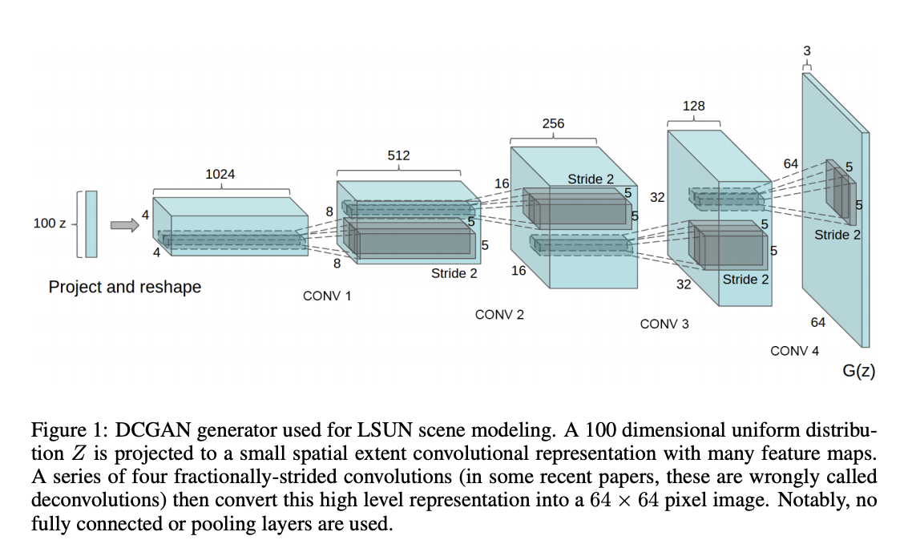
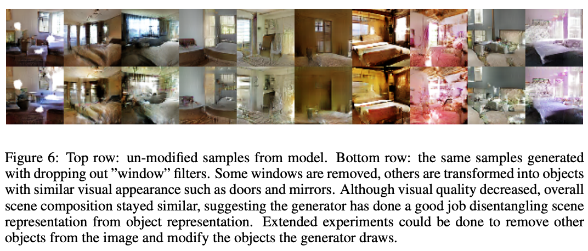

DCGAN 리뷰
by Jung Jaeeun
이 포스팅에서 리뷰할 DCGAN은 사실 GAN을 더욱 더 유명하게 만들어준 논문으로, 이 논문이 publish된 이후로 대부분의 GAN 아키텍쳐는 DCGAN의 아키텍쳐를 따른다.
기존 CNN을 이용한 DNN에 architectural contraints를 더해줌으로써 hierarchical representation을 학습할 수 있는 것이 이 논문의 주요 내용이다.
먼저, unsupervised learning의 의의를 설명해보자면 labeled dataset은 구하기 어려운 것에 비해 unlabeled dataset은 구하기가 매우 쉽다. 따라서 구하기 쉬운 대용량의 unlabeled dataset을 이용해 reusable한 feature representation을 학습할 수 있다면 supervised learning에도 유용히 쓰일 수 있고, 우리의 데이터의 분포를 이해할 수 있다.
이 논문의 proposal은 아래와 같다.
- CNN을 이용한 GAN에 여러 constraints를 더 해줌으로써 GAN의 unstability 해결
- 학습된 discriminator를 이미지 분류 문제에 적용했더니 좋은 성능을 보임
- GAN의 필터를 시각화함으로써 explainability 확장
- generator는 Word2vec처럼 흥미로운 vector arithmetic 성질이 존재 ex) king+woman => queen
그렇다면 해당 논문의 핵심이라고 할 수 있는 architectural constraints는 무엇일까? 사실 나는 굉장히 대단할 거라고 생각했는데 생각보다 간단해서 놀랐다..

- strided convolution: 이미지 본연의 spatial upsampling을 학습한다.
- FC layer 대신 feature map을 flatten해서 사용
- Batch Normalization: mode collapsing 방지 (단, generator output layer와 discriminator input layer에는 적용하지 않음)
결과적으로는 아래와 같은 구조가 된다. 
100-dimension의 uniform distribution을 따르는 랜덤 벡터 Z를 4차원텐서(N x C x H x W)로 reshape 해준 다음 Transpose Convolution을 이용해서 계속 upsampling 해주고, 마지막엔 기본 RGB 이미지처럼 64x64x3으로 바꿔준다.
이후론 학습에 사용된 여러 테크닉들이 나오는데, 대부분 generator가 학습 데이터를 그냥 외워버리는 것을 방지하거나/아님을 증명하기 위한 것들이다.
작은 학습률(0.0002) + minibatch SGD를 이용하여 1 epoch 동안 학습을 진행했는데 성과가 좋았다는 것과 5 epoch 이후 오히려 underfitting이 일어났다는 것이 generator가 제대로 학습하고 있다는 증거에 해당한다.
또한 개인적으로 인상깊었던 것은 duplication을 방지하기 위해 de-noising autoencoder를 이용해 이미지를 코드화한후 비슷한 코드끼리 제거했다는 것(semantic-hashing)이다.
다음 섹션에서는 실제 데이터에 적용한 emprical validation을 열거한다. 앞서 말한 image classification task를 위해 discriminator의 모든 feature map을 사용하여 CIFAR-10을 분류한 결과 82.8%의 정확도를 달성했다고 한다.
마지막 섹션에서는 generator가 학습한 representation의 validity를 입증한다. Z의 grid를 나눠서 이미지를 생성해보기도하고, discriminator의 필터를 시각화해보기도 하는데 제일 재미있었던 것은 특정 사물은 잊도록(forgetting) 해보는 실험이었다. 150개의 학습 데이터중 52개의 이미지에서 창문에 대한 bounding box를 수동으로 라벨링하고 generator의 마지막에서 두번째 convolution layer를 이용해 창문이 있는지/없는지 로지스틱 회귀를 fit한다. 이때 기준은 바운딩 박스안의 activation 값이 positive, 랜덤 이미지에서는 negative 값을 가지는지 여부로 정했다고 한다.
이 모델을 이용해서 회귀계수 값이 0보다 큰 feature map은 drop한 후(random new samples로 대체) generation을 진행한 결과는 다음과 같다.

사실 DCGAN 하면 제일 유명한 것 vector arthimetic properties에 관한 것일텐데.. 너무 유명하니까 생략하겠음..
마지막으로는 future work에 대해 설명하는데, 학습을 오래 시킬수록 오히려 oscillating mode가 생긴다고 한다.
reference: Unsupervised Representation Learning with Deep Convolutional Generative Adversarial Networks
Subscribe via RSS